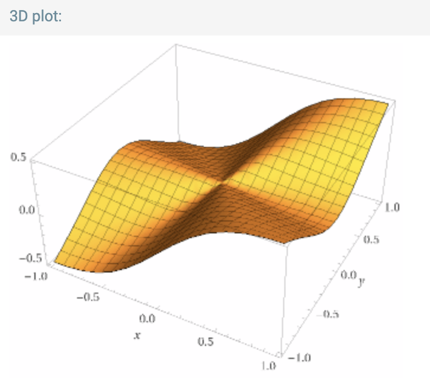

Vamos a motivar la definición de la derivada en 2 o más dimensiones y para esto vamos a regresar a cálculo 1 y vamos a ver qué es la derivada.
La derivada como la razón de cambio.
Por ejemplo, si \(f(t)\) representa la posición de una partícula en el eje real, con respecto al tiempo \(t\), la razón de cambio de \(f\) del tiempo \(t\) al tiempo \(\Delta t\) está dada por \[ \frac{f(t+\Delta t)-f(t)}{\Delta t}. \] Si tomamos el límite cuando \(\Delta t \to 0\) obtenemos la razón de cambio instantánea, es decir, la derivada \[ f'(t)=\lim_{\Delta t\to 0} \frac{f(t+\Delta t)-f(t)}{\Delta t}. \]
La derivsda como pendiente de la recta tangente
Si \(f:(a,b) \to \mathbb{R}\) es una función diferenciable em \(x_0\) la pendiente de una recta secante que pasa por \((x_0,f(x_0))\) es \[ \frac{f(x)-f(x_0)}{x-x_0} \] para \(x\) cercano a \(x_0\) pero sin tocarlo.
Tomando el límite cuando \(x\to x_0\) obtenemos la pendiente de la recta tangente \[ f'(x_0)=\lim_{x\to x_0}\frac{f(x)-f(x_0)}{x-x_0} \] y la rectan tangente a la gráfica de \(f\) que pasa por \((x_0,f(x_0))\) es \[ y=f(x_0)+f'(x_0)(x-x_0) \]
Esta interpretación tiene que ver mucho con la recta tangente.
La función \(f\) tiene aproximación lineal en el punto \(x_0\) si existe un número \(d\) tal que \[ f(x)=f(x_0)+d(x-x_0)+E(x) \] donde \(E\) es el error que además se va a cero como \[ \lim_{x\to x_0} \frac{E(x)}{x-x_0}=0. \] Uno prueba que tener aproximación lineal es lo mismo que ser diferenciable y en tal caso siempre se tiene que \(d=f'(x_0)\).
Vemos que las primeras dos interpretacions son básicamente las mismas, involucran límites de cocientes diferenciales: \begin{eqnarray*} \frac{f(t+\Delta t)-f(t)}{\Delta t}, \\ \frac{f(x)-f(x_0)}{x-x_0}. \end{eqnarray*} Ahora pensemos a \(f\) como una función \(F\) de un subconjunto de \(\mathbb{R}^n\) a \(\mathbb{R}^m\) y veamos que cambia en estos cocientes, digamos el segundo. Como ahora son puntos en el espacio vamos a cambiar las \(x\)'s por \(p\)'s. El cociente queda \[ \frac{F(p)-F(p_0)}{p-p_0}. \] El numerador sigue teniendo sentido pues al ser \(F(p)\) y \(F(p_0)\) vectores los podemos restar, pero el numerador es un vector, \(p-p_0\), el cual no podemos dividir. Una forma de solucionarlo es cambiar \(p-p_0\) por \(\|p-p_0\|\) esl cual ya es un escalar, para obtener: \[ F'(p_0)=\lim_{p\to p_0}\frac{F(p)-F(p_0)}{\|p-p_0\|} \] ¿Es ésta una buena definición de la derivada? Para ser una buena definición primeramente no debemos de rompar la definición en dimensión 1. Para checar esto vamos a checar la "nueva definición" con la función \(f(x)=x^2\). Con la "nueva definición" tenemos que la derivada se puede calcular como: \begin{eqnarray*} \lim_{x\to x_0} \frac{f(x)-f(x_0)}{|x-x_0|}&=&\lim_{x\to x_0}\frac{x^2-x_0^2}{|x-x_0|} \\ &=& \lim_{x\to x_0} \frac{(x+x_0)(x-x_0)}{|x-x_0|} \end{eqnarray*} y notamos que \begin{eqnarray*} \lim_{x\to x_0^+} \frac{(x+x_0)(x-x_0)}{|x-x_0|}&=&\lim_{x\to x_0^+} \frac{(x+x_0)(x-x_0)}{(x-x_0)} \\ &=& \lim_{x\to x_0} (x+x_0)\\ &=&2x_0 \end{eqnarray*} además \begin{eqnarray*} \lim_{x\to x_0^-} \frac{(x+x_0)(x-x_0)}{|x-x_0|}&=&\lim_{x\to x_0^-} \frac{(x+x_0)(x-x_0)}{-(x-x_0)} \\ &=& \lim_{x\to x_0} -(x+x_0)\\ &=&-2x_0 \end{eqnarray*} De lo anterior concluimos que, para \(x_0\ne 0\), el límite \[ \lim_{x\to x_0} \frac{f(x)-f(x_0)}{|x-x_0|} \] así que rompimos la definición de la derivada en una dimensión.
Ahora usemos la interpretación de la dervada como aproximación lineal. De nuevo pensando ahora en una función \(F\) de ub subconjunto de \(\mathbb{R}^n\) a \(\mathbb{R}^m\) copiando la aproximación lineal tenemos \[ F(p)=F(p_0)+d(p-p_0)+E(p) \] donde \[ \lim_{p\to p_0} \frac{E(p)}{p-p_0}=0. \] De nuevo tenemos el problema de que estamos dividiendo por un vector. Tratando de arreglarlo podemos pedir \(\lim_{p\to p_0} \frac{E(p)}{\|p-p_0\|}=0\). Parece que hacemos lo mismo que en el primer intento pero hay una diferencial crucial, el límite de una función vectorial es cero si y sólo si el límite de su norma es cero, es decir: \[ \lim_{p\to p_0} \frac{E(p)}{\|p-p_0\|}=0 \Leftrightarrow \lim_{p\to p_0} \frac{\|E(p)\|\\}{\|p-p_0\|}=0. \] y ahora que tanto el numerador como el denominador tengan norma arreglan el problema de los signos en los límites laterales que teníamos antes.
Ahora ponemos toda esta información en una sola ecuación y tratamos de dar la definición de derivada diciendo que \(F\) es diferenciable en \(p_0\) si existe un escalar \(d\) tal que \[ \lim_{p\to p_0} \frac{F(p)-F(p_0)-d(p-p_0)}{\|p-p_0\|}=0 \] De nuevo vamos a probar la "nueva definición". Queremos que la definición funciones para funciones entre espacios de cualquier dimensión y en las dimensiones encontramos el problema. Supongamos que \(F:\mathbb{R}^2 \to \mathbb{R}\), en este caso la expresión del numerador: \[ F(p)-F(p_0)-d(p-p_0) \] no tiene sentido pues \(F(p)-F(p_0)\) es un escalar pero \(d(p-p_0)\) es un vector de dimensión 2, así que no se pueden sumar. El problema es \(d(p-p_0)\) que es el término que precisamente involucra nuestro intento de derivada (la \(d\) en este caso).
Lo que nos va a dar la última pista es el plano tangente. Si la función es de la forma \(F:\mathbb{R}^2 \to R\) la gráfica es una superficie en \(\mathbb{R}^3\) y la noción de rectan tangente ahora debe de ser un plano tangente y éste (intuitivamente) tiene que tener relación con la derivada. La ecuación de un plano que pasa por \((p_0, F(p_0))\), donde \(p_0=(x_0,y_0)\), es de la forma \[ z=F(p_0)+a(x-x_0)+b(x-x_0) \] donde \(a,b\) son unas constantes. Es decir, el plano está completamente determinado por las constantes \(a\) y \(b\) y el punto \((x,y,z)\) cae en el plano si y sólo si sus coordenadas satisfacen la ecuación anterior.
Observación: podemos reescribir la ecuación del plano como \[ z=F(p_0)+ v\cdot (p-p_0) \] donde \(v=(a,b)\). Comparando con lo que teníamos de la aproximación lineal vamos a cambiar la expresión \(d(p-p_0)\) por \(v\cdot (p-p_0)\).
Con este cambio la "nueva definición" de la derivada dice que \(F\) es diferenciable en el punto \(p_0\) si existe un vector \(v\) que satisface \[ \lim_{p\to p_0} \frac{F(p)-F(p_0)-v\cdot (p-p_0)}{\|p-p_0\|}=0 \]
Volvamos a probar la "nueva definición". El problema que teníamos eran las dimensiones. Si \(F\) es una función en general que va de \(\mathbb{R}^n\) a \(\mathbb{R}^m\) la expresión del numerador en la "nueva definición" queda: \[ F(p)-F(p_0)-v\cdot (p-p_0) \] que tiene sentido si la función \(F\) toma valores escalares (es decir, \(m=1\)) pero si \(F\) toma valores vectoriales \(F(p)-F(p_0)\) es un vector pero \(v\cdot (p-p_0)\) es un escalar, por lo que no se pueden sumar. Para arreglar éste último paso los matemáticos (Maurice Fréchet y después popularizado por Jean Dieudonné) hicieron la siguiente observación.
Super observación: podemos pensar la expresión \(v\cdot (p-p_0)\) como una función lineal: \[ q \mapsto v\cdot q \] Entonces la idea es reemplazar \(v\cdot (p-p_0)\) por una función lineal que "arregle" las dimensiones, algo de la forma \(T(p-p_0)\) donde \(T\) es una función lineal que toma vectores de dimensión \(n\) y arroja vectores de dimensión \(m\) (para que cuadren los valores de \(F\)).
La definición formal se da acontinuación.
El caso escalar es importante y hay una forma de entender el caso general (es decir, funciones con valores vectoriales) mediante el caso escalar así que damos éste primero.
Sea $U\subseteq\mathbb{R}^n$ un abierto y $f:U\to \mathbb{R}$ una función escalar (por ejemplo la temperatura).
Dado un punto $p_0\in U$, decimos que $f$ es diferenciable en $p_0$ si, existe un vector \(v\in \mathbb{R}^n\), tal que $$ \lim_{p \to p_0} \frac{f(p)-f(p_0)-v\cdot (p-p_0)}{\|p-p_0\|}=0 $$
Al vector \(v\) en la definición anterior se le llama el gradiente de \(f\) en \(p_0\) y se denota \(\nabla_{p_0}f\).
Sea $U\subseteq\mathbb{R}^n$ un abierto y $F:U\to \mathbb{R}^m$ una función general.
En este caso el numerador de la definición escalar es \(F(p)-F(p_0)-v\cdot (p-p_0)\), el cual puede no tener sentido pues \(F(p)-F(p_0)\) es un vector en \(\mathbb{R}^m\) y \(v\cdot (p-p_0)\) es un escalar, así que no se pueden sumar.
Para arreglar las dimensiones recordamos que por el Teorema de Riesz toda función lineal de la forma \(T:\mathbb{R}^n\to \mathbb{R}\) se puede reescribir como \(T(q)=v\cdot q\), para un único vector \(v\). Así pues la parte \(v\cdot (p-p_0)\) de la definición anterior va a ser reemplazada por una función lineal, con las dimensiones adecuadas.
Dado un punto $p_0\in U$, decimos que $F$ es diferenciable en $p_0$ si, existe una función lineal $T:\mathbb{R}^n \to \mathbb{R}^m$, tal que $$ \lim_{p \to p_0} \frac{F(p)-F(p_0)-T(p-p_0)}{\|p-p_0\|}=0 $$ Si es así, la función lineal $T$ se llama la derivada de $F$ en $p_0$ y la vamos a denotar por $D_{p_0}F$.
Notas.
Considera la función, $f(x,y)=x^2+y^2$.
Fija un punto $p_0=(x_0,y_0)$ en $\mathbb{R}^2$ y define \(v=(2x_0,2y_0)\).
Vamos a probar que \[ \lim_{p\to p_0}\frac{|f(p)-f(p_0)-v\cdot (p-p_0)|}{\|p-p_0\|}=0 \] escribiendo el límite anterior en coordenadas se tiene $$ \lim_{(x,y)\to (x_0,y_0)} \frac{|f(x,y)-f(x_0,y_0)-(2x_0,2y_0)\cdot (x-x_0,y-y_0)|}{\| (x-x_0,y-y_0)\|}=0 $$ Esto probaria que \(f\) es diferenciable en todo punto \(p_0\) y \(\nabla_{p_0}f=(2x_0,2y_0)\) ó que la derivada es la función lineal \(D_{p_0}f:\mathbb{R}^2 \to \mathbb{R}\) dado por \(D_{p_0}f(x,y)=(2x_0,2y_0)\cdot (x,y)\). Abusando la notación podemos poner \(D_{p_0}f=(2x_0,2y_0)\).
No es coincidencia de que \(2x_0=\partial_xf(x_0,y_0), 2y_0=\partial_yf(x_0,y_0)\).
Paso 1: Proponer la derivada, en este caso \(v=(2x_0, 2y_0)\).
Paso 2: Cociente diferencial \begin{eqnarray*} & & \frac{f(x,y)-f(x_0,y_0)-v\cdot (x-x_0,y-y_0)}{\|(x-x_0,y-y_0)\|} \\ &=& \frac{x^2+y^2-x_0^2-y_0^2-2x_0(x-x_0)-2y_0(y-y_0)}{\|(x-x_0,y-y_0)\|}\\ &=&\frac{x^2+y^2-x_0^2-y_0^2-2x_0x+2x_0^2-2y_0y+2y_0^2}{\|(x-x_0,y-y_0)\|}\\ &=&\frac{x^2+y^2-2x_0x+x_0^2-2y_0y+ y_0^2}{\|(x-x_0,y-y_0)\|}\\ &=& \frac{(x-x_0)^2+(y-y_0)^2}{\sqrt{(x-x_0)^2+(y-y_0)^2}} \\ &=& \sqrt{(x-x_0)^2+(y-y_0)^2}\\ &=& \|(x-x_0,y-y_0)\| \end{eqnarray*}
Paso 3: límite del cociente diferencial \[ \lim_{(x,y)\to 0}\frac{f(x,y)-f(x_0,y_0)-T(x-x_0,y-y_0)}{\|(x-x_0,y-y_0)\|}=\lim_{(x,y)\to 0}\|(x-x_0,y-y_0)\|=0. \]
Es decir, si \(f:U\to \mathbb{R}^m\) es una función definida en un abierto de \(\mathbb{R}^n\), \(p_0\in U\) y existen dos funciones lineales \(S,T:\mathbb{R}^n\to \mathbb{R}^m\) que satisfacen \begin{eqnarray*} \lim_{u\to 0} \frac{F(p_0+u)-F(p_0)-T(u)}{\|u\|}=0 \\ \lim_{u\to 0} \frac{F(p_0+u)-F(p_0)-S(u)}{\| u\|}=0 \end{eqnarray*} entonces \(S=T\).
Ya que los límites arriba existen entonces el límite de la resta es la resta de los límites, por lo tanto \begin{eqnarray*} 0&=& \lim_{ u \to 0}\left( \frac{F(p_0+u)-F(p_0)-T(u)}{\|u\|} - \frac{F(p_0+u)-F(p_0)-S(u)}{\|u\|}\right) \\ &=& \lim_{u\to 0} \frac{S(u)-T(u)}{\|u\|} \end{eqnarray*}
Si definimos una función lineal como \(L=S-T\) lo anterior se puede escribir \[ \lim_{u\to 0}\frac{L(u)}{\|u\|}=0 \]
Ahora, como el límite existe y es cero entonces el límite a lo largo de cualquier recta existe y también es cero. Entonces tomando \(u\) de la forma \(u=tp\), donde \(p\) es cualquier vector (distinto de cero) tenemos \begin{eqnarray*} 0&=&\lim_{t\to 0^+} \frac{L(tp)}{\|t p\|} \\ &=& \lim_{t\to 0^+} \frac{tL(p)}{t\|p\|} \\ &=& \frac{L(p)}{\|p\|} \end{eqnarray*} Ya que \(p\ne 0\) concluimos que \(L(p)=0\) lo cual implica \(T(p)=S(p)\). Al ser \(p\) arbitrario concluimos que \(S=T\).
Sea \(U\subseteq \mathbb{R}^n\) un abierto y \(F,G:U\to \mathbb{R}^m\) dos funciones. Sea \(p_0\in U\) y supongamos que \(F\) y \(G\) son diferenciables en \(p_0\). Entonces, dado cualquier escalar \(\alpha\), la combinación lineal \(\alpha F+G\) es diferenciable en \(p_0\) y \[ D_{p_0}(\alpha F+ G)= \alpha D_{p_0} F+ D_{p_0}G \]
Sea $U$ un abierto en $\mathbb{R}^n$ y $f:U\to \mathbb{R}$. Considera un punto $p_0\in U$. Supon que $f$ es diferenciable en $p_0$ y sea \(\nabla_{p_0}f\) su vector gradiente, es decir \begin{equation}\label{Eqn:LimiteDerivadaEjer} \lim_{u \to 0}\frac{|f(p_0+u)-f(p_0)-\nabla_{p_0}f\cdot u|}{\| u \|}=0. \end{equation}
Entonces todas las derivadas parciales \(\partial_if(p_0)\), \(i=1,\dots, n\) existen y \[ \nabla_{p_0}f= (\partial_1 f(p_0), \dots, \partial_n f(p_0)) \]
Vamos a denotar las entradas de \(\nabla_{p_0}f\) por \[ \nabla_{p_0}f=(a_1,\dots, a_n). \] Nota que \(\nabla_{p_0}f\cdot e_i=a_i\), \(i=1,\dots, n\), donde \(e_i\) es el \(i\)-ésimo vector canónico.
Como el límite \eqref{Eqn:LimiteDerivadaEjer} es cero, los límites sobre las rectas generadas por los vectores canónicos también son cero. Entonces tomando \(u\) de la forma \(u=te_i\) y haciendo \(t\) tender a cero obtenemos \begin{eqnarray*} 0&=&\lim_{ t \to 0} \frac{|f(p_0+te_i)-f(p_0)- \nabla_{p_0}f\cdot (te_i) | }{\|te_i\|} \\ &=& \lim_{t\to 0}\frac{|f(p_0+te_i)-f(p_0)-t \nabla_{p_0}f\cdot e_i|}{|t|} \\ &=& \lim_{t\to 0}\left| \frac{f(p_0+te_i)-f(p_0)-ta_i}{t} \right| \\ &=& \lim_{t\to 0}\left| \frac{f(p_0+te_i)-f(p_0)}{t}-a_i \right| \\ \end{eqnarray*} implica que $\partial_{i}f(p_0)$ existe y es igual a $a_i$. En resumen \[ \nabla_{p_0}f=(\partial_1 f(p_0), \dots, \partial_n f(p_0)). \]
La Proposición anterior prueba que \[ \textrm{\(f\) diferenciable en \(p_0\)} \Rightarrow \textrm{\(\partial_1f(p_0),\cdots,\partial_nf(p_0)\) existen} \] pero la implicación en reversa no siempre es cierto (ver el siguiente ejemplo).
La Proposición 7.7 muestra que las derivadas parciales y la derivada están muy relacionadas, pero éste ejercicio muestra que no son equivalentes. Es decir, una función puede admitir derivadas parciales sin ser diferenciable.
Considera la función $$ f(x,y)=\left\{ \begin{array}{cc} \frac{xy^2}{x^2+y^2} & (x,y)\ne (0,0) \\ 0 & (x,y)=(0,0) \end{array} \right. $$

Inciso 1.
Usando la definición de límite de las parciales tenemos \begin{eqnarray*} \partial_xf(0,0)&=&\lim_{h\to 0} \frac{f(h,0)-f(0,0)}{h} \\ &=& \lim_{h\to 0} \frac{\frac{(h)(0)}{h^2+0}}{h}\\ &=&0 \end{eqnarray*} \begin{eqnarray*} \partial_yf(0,0)&=&\lim_{k\to 0} \frac{f(0,k)-f(0,0)}{k} \\ &=& \lim_{k\to 0} \frac{\frac{(0)(k^2)}{0+k^2}}{k}\\ &=&0 \end{eqnarray*}
Inciso 2.
Supongamos que \(f\) es diferenciable en \((0,0)\). Entonces \begin{eqnarray*} 0&=&\lim_{(h,k)\to 0} \frac{f(h,k)-f(0,0)-\nabla_{p_0}f\cdot (h,k)}{\|(h,k)\|} &=&\lim_{(h,k)\to 0} \frac{f(h,k)-\nabla_{p_0}f\cdot (h,k)}{\|(h,k)\|} \end{eqnarray*} donde en la última igualdad usamos \(f(0,0)=0\).
A continuación, por la Proposición 7.7 y el inciso anterior, \[ \nabla_{p_0}f=(\partial_xf(0,0), \partial_yf(0,0))=(0,0). \] Se sigue que el límite anterior se simplifica a: \begin{eqnarray*} 0&=&\lim_{(h,k)\to 0} \frac{f(h,k)}{\|(h,k)\|} \end{eqnarray*}
Tomando puntos de la forma \((h,k)=(mk, k)\) con \(k>0\) y \(m\in \mathbb{R}\) obtenemos \begin{eqnarray*} \frac{f(h,k)}{\|(h,k)\|}&=& \frac{\frac{(mk)(k^2)}{m^2k^2+k^2}}{\sqrt{m^2k^2+k^2}} \\ &=& \frac{\frac{mk^3}{k^2(m^2+1)}}{k\sqrt{m^2+1}}\\ &=& \frac{m}{(m^2+1)\sqrt{m^2+1}} \end{eqnarray*}
Tomando \(m=0\) obtenemos que \begin{eqnarray*} \lim_{(h,k)\to 0} \frac{f(h,k)}{\|(h,k)\|}=0 \end{eqnarray*} pero tomando \(m=1\) obtenemos \begin{eqnarray*} \lim_{(h,k)\to 0} \frac{f(h,k)}{\|(h,k)\|}=\frac{1}{2\sqrt{2}} \end{eqnarray*} por lo tanto el límite \begin{eqnarray*} \lim_{(h,k)\to 0} \frac{f(h,k)}{\|(h,k)\|}=0 \end{eqnarray*} no existe, una contradicción.
Concluimos que \(f\) no es diferenciable en \((0,0)\).
Sea \(U\subseteq \mathbb{R}^n\) un abierto y \(F:U\to \mathbb{R}^m\) una función. Escribamos sus funciones coordenadas como \(F=(f_1,\dots, f_m)\).
Entonces \(F\) es diferenciable en \(p_0\) si y sólo si para todo \(i=1,\dots, n\), \(f_i\) es diferenciable en \(p_0\).
Además la representación matricial de \(D_{p_0}F\) es la matriz de \(m\times n\) dada por las derivadas parciales \([\partial_{j}f_i(p_0)]_{1\leq i \leq m, 1\leq j \leq n}\), es decir \[ \left[ \begin{array}{cccc} \partial_1f_1(p_0) & \partial_2 f_1(p_0) & \cdots & \partial_n f_1(p_0) \\ \partial_1f_2(p_0) & \partial_2 f_2(p_0) & \cdots & \partial_n f_2(p_0) \\ \vdots & \vdots & \vdots & \vdots \\ \partial_1f_m(p_0) & \partial_2 f_m(p_0) & \cdots & \partial_n f_m(p_0) \\ \end{array} \right] \]
Antes de iniciar recordamos las desigualdades \begin{equation}\label{Eqn:Aux0DiferenciableRn} |q_i|\leq \|q\|\leq \sum_{k=1}^m |q_i|, \end{equation} válidas para tod \(i=1,\dots, m\) y todo \(q=(q_1,\dots, q_m)\in \mathbb{R}^m\).
\(\Rightarrow] \) Supongamos que \(F\) es diferenciable en \(p_0\).
P.D. para toda \(i=1,\dots, m\), \(f_i\) es diferenciable en \(p_0\).
Al ser \(F\) diferenciable en \(p_0\) existe una función lineal \(T:\mathbb{R}^n \to \mathbb{R}^m\) que satisface \begin{equation}\label{Eqn:Aux1DiferenciableRn} \lim_{p\to p_0} \frac{\|F(p)-F(p_0)-T(p-p_0) \|}{\|p-p_0\|}=0. \end{equation} Escribimos las funciones coordenadas de \(T\) como \[ T=(\tau_1, \dots , \tau_m). \] Al ser \(T\) lineal se tiene que todas las funciones, \(\tau_1,\dots, \tau_m: \mathbb{R}^n \to \mathbb{R}\) también son lineales.
De la primera desigualdad en \eqref{Eqn:Aux1DiferenciableRn} obtenemos \[ |f_i(p)-f_i(p_0)-\tau_i(p-p_0)|\leq \|F(p)-F(p_0)-T(p-p_0) \| \] y dividiendo por \(\|p-p_0\| \) llegamos a \[ 0\leq \frac{|f_i(p)-f_i(p_0)-\tau_i(p-p_0)|}{\|p-p_0\|}\leq \frac{\|F(p)-F(p_0)-T(p-p_0)\|}{\|p-p_0\|} \] Al tomar límite cuanto \(p\to p_0\) en la desigualdad anterior y usando \eqref{Eqn:Aux1DiferenciableRn} la ley del sandwich implica \[ \frac{|f_i(p)-f_i(p_0)-\tau_i(p-p_0)|}{\|p-p_0\|}=0 \] Concluyendo que \(f_i\) es diferenciable en \(p_0\).
\(\Leftarrow ]\) Ahora supongamos que para toda \(i=1,\dots,m\), la función coordenada \(f_i\) es diferenciable en \(p_0\).
P.D. F es diferenciable en \(p_0\).
Como \(f_i\) es diferenciable en \(p_0\) existe el vector gradiente \(\nabla_{p_0}f_i\). Ahora por \(\tau_i:\mathbb{R}^n \to \mathbb{R}\) denotamos a la función lineal dada por \(\tau_{i}(p)=\nabla_{p_0}f_i \cdot p\).
Al ser \(f_i\) diferenciable en \(p_0\) ésto nos asegura que \begin{equation}\label{Eqn:Aux2DiferenciableRn} \lim_{p\to p_0} \frac{|f_i(p)-f_i(p_0)-\tau_i(p-p_0)|}{\|p-p_0\|}=0 \end{equation} para todo \(i=1,\dots, m\).
Ahora definimos \(T:\mathbb{R}^n \to \mathbb{R}^m\) dada por \[ T(p)=(\tau_1(p), \dots, \tau_m(p)) \] Como cada función \(\tau_i\) es lineal resulta que \(T\) es lineal.
Por la segunda desigualdad en \eqref{Eqn:Aux1DiferenciableRn} tenemos \[ \|F(p)-F(p_0)-T(p-p_0)\| \leq \sum_{k=1}^m |f_k(p)-f_k(p_0)-\tau_k(p-p_0)|. \] Dividiendo entre \(\|p-p_0\|\) obtenemos \[ 0\leq \frac{\|F(p)-F(p_0)-T(p-p_0)\|}{\|p-p_0\|} \leq \sum_{k=1}^m \frac{|f_k(p)-f_k(p_0)-\tau_k(p-p_0)|}{\|p-p_0\|} \] Finalmente usando \eqref{Eqn:Aux2DiferenciableRn} y la ley del sandwich llegamos a \[ \lim_{p\to p_0 }\frac{\|F(p)-F(p_0)-T(p-p_0)\|}{\|p-p_0\|} =0 \] concluyendo que \(F\) es diferenciable.
Por último vamos a probar que la matriz que representa a \(D_{p_0}F\) es la matriz de derivadas parciales \([\partial_j f_i(p_0)]_{1\leq i \leq m, 1\leq j \leq n}\).
Con la notación anterior tenemos que \(D_{p_0}F=T\). Por otro lado las funciones coordenadas de \(T\) son \(\tau_i\), \(i=1,\dots, m\) y a su vez las \(\tau_i\) vienen dadas con el producto punto con el vector gradiente \(\nabla_{p_0}f_i\). Ahora por Proposición 7.7 tenemos que las entradas del vector gradiente son \[ \nabla_{p_0}f_i= (\partial_1 f_i(p_0), \dots, \partial_n f_i(p_0)) \] Por último, de la sección 3 Teorema 3.12 tenemos que la matriz que representa a \(T\) es la que tiene por renglones a los vectores asociados a las funciones coordenadas, es decir a los vectores \(\nabla_{p_0}f_i\). Entonces la matriz que representa a \(T\) es \[ \left[ \begin{array}{cccc} \partial_1f_1(p_0) & \partial_2 f_1(p_0) & \cdots & \partial_n f_1(p_0) \\ \partial_1f_2(p_0) & \partial_2 f_2(p_0) & \cdots & \partial_n f_2(p_0) \\ \vdots & \vdots & \vdots & \vdots \\ \partial_1f_m(p_0) & \partial_2 f_m(p_0) & \cdots & \partial_n f_m(p_0) \\ \end{array} \right] \]
Sea $U$ un abierto de $\mathbb{R}^2$, $(x_0,y_0)\in U$ y $f:U\to \mathbb{R}$ una función diferenciable en $p_0$. El plano tangente a la gráfica de $f$ en el punto $(x_0,y_0)$ se define como el plano cuya ecuación está dada por: $$ z=f(x_0,y_0)+\partial_xf(x_0,y_0)(x-x_0)+\partial_yf(x_0,y_0)(y-y_0). $$ Nota: de la ecuación se tiene que el vector normal al plano tangente es $$N=(\partial_xf(x_0,y_0), \partial_yf(x_0,y_0), -1)$$
La idea tras la definición del plano tangente en un punto \((x_0,y_0)\) es que es el plano que más se aproxima a la función cerca del punto \((x_0,y_0)\).
Para tratar de justificar lo anterior consideramos las curvas \[ \gamma(t)=(x_0+t,y_0,f(x_0+t,y_0)), \delta(t)=(x_0,y_0+t, f(x_0,y_0+t)) \]
Estas curvas se dibujan sobre la gráfica de \(f\) y en \(t=0\) pasan por \((x_0,y_0,f(x_0,y_0))\), el punto de tangencia del plano tangente. Si notamos, los cocientes diferenciales \[ \frac{\gamma(t)-\gamma(0)}{t}, \frac{\delta(t)-\delta(0)}{t} \] dan rectas secantes a la gráfica así que cuando tomamos el límite cuando \(t\to 0\) la idea es que estos límites dan vectores tangentes a la gráfica.
Calculando los límites \[ \lim_{t\to 0}\frac{\gamma(t)-\gamma(0)}{t}, \lim_{t\to 0}\frac{\delta(t)-\delta(0)}{t} \] llegamos a que son iguales a \[ (1,0,\partial_xf(x_0,y_0)), (0,1,\partial_{y}f(x_0,y_0)) \] estos vectores son los vectores directores para el plano tangente a la gráfica.
En forma paramétrica tenemos que el plano esta dado por \[ (x_0,y_0,f(x_0,y_0))+t(1,0,\partial_xf(x_0,y_0))+s(0,1,\partial_yf(x_0,Y_0)) \] de la cual se obtiene la forma \[ z=f(x_0,y_0)+\partial_xf(x_0,y_0)(x-x_0)+\partial_yf(x_0,y_0)(y-y_0). \]
En el caso de curvas parametrizadas \(\gamma: I \to \mathbb{R}^n\) con \(I\subseteq \mathbb{R}\) un intervalo, el Teormea 7.10 dice que \(\gamma(t)=(x_1(t),x_2(t),\cdots, x_n(t))\) es diferenciable en \(t_0\) si y sólo si cada función coordenada de \(\gamma\), es decir \(x_i(t)\) \(i=1,2,\ldots,n\), es diferenciable en \(t_0\).
En este caso la derivada de \(\gamma\) en \(t_0\) es el vector dado por \[ D_{t_0}\gamma=\gamma'(t_0)=(x_1'(t_0), x_2'(t_0), \cdots, x_n'(t_0)). \] que es exáctamente la misma definición de derivada para curvas parametrizadas que se da en la sección 4, Definición 4.19.
Nota: si \(\gamma'(t_0)\) no es el vector cero, es un vector tangente a la curva en el punto \(\gamma(t_0)\).
Si \(\gamma:I \to \mathbb{R}^n\) es una curva parametrizada diferenciable en \(t_0\), entonces \[ \lim_{t\to t_0} \frac{\|\gamma(t)-\gamma(t_0)-\gamma'(t_0)(t-t_0)\|}{|t-t_0|}=0. \] ó equivalentemente \[ \lim_{t\to t_0} \left\| \frac{\gamma(t)-\gamma(t_0)}{t-t_0}-\gamma'(t_0) \right\|=0. \]
Considera la función $f(x,y)=xy$. Fija $(x_0,y_0)\in \mathbb{R}^2$ y considera el vector \(v=(y_0,x_0)\).
Prueba que $$ \lim_{(x,y)\to (x_0,y_0)} \frac{|f(x,y)-f(x_0,y_0)-v\cdot (x-x_0,y-y_0)|}{\| (x-x_0,y-y_0)\|}=0 $$ Hint: primero prueba $$ f(x,y)-f(x_0,y_0)- v\cdot (x-x_0,y-y_0) = (x-x_0)(y-y_0) $$ Concluye que $f$ es diferenciable en todo punto $(x_0,y_0)$ y que $\nabla_{(x_0,y_0)}f=(y_0,x_0)$.
Considera la función $f(x,y)=x^3+y^3$. Fija $(x_0,y_0)\in \mathbb{R}^2$ y considera el vector \(v=(3x_0^2, 3y_0^2)\)
Prueba que $$ \lim_{(x,y)\to (x_0,y_0)} \frac{|f(x,y)-f(x_0,y_0)-v\cdot (x-x_0,y-y_0)|}{\| (x-x_0,y-y_0)\|}=0 $$ Concluye que $f$ es diferenciable en todo punto $(x_0,y_0)$ y que $\nabla_{(x_0,y_0)}f=(3x_0^2, 3y_0^2)$.
Demuestra que toda función constante $F:\mathbb{R}^n \to \mathbb{R}^m$ es diferenciable en todo punto $p_0$ y que $D_{p_0}f$ es la función constante cero.
Supongamos que $F:\mathbb{R}^n \to \mathbb{R}^m$ es una función lineal. Demuestra que, para todo $p_0\in \mathbb{R}^n$, $F$ es diferenciable en $p_0$ y además para todo \(p_0\), $D_{p_0}F=F$.
Sean \(f :(a,b)\to \mathbb{R}, g:(c,d)\to \mathbb{R}\) dos funciones diferenciables en todo el intervalo.
Define \(h:(a,b)\times (c,d)\) por \(h(x,y)=f(x)+g(y)\). Demuestra que \(h\) es diferenciable en todo punto \((x_0,y_0)\in (a,b)\times (c,d)\) y que \[ \nabla_{(x_0,y_0)}h=(f'(x_0), g'(y_0)). \]
Para cada una de las siguientes funciones calcula el gradiente. Asume que las funciones dadas son diferenciables en el interior de los dominios de definición.
Considera la función \(f(x,y)=\sqrt{|xy|}\).
Prueba que las derivadas parciales \(\partial_xf(0,0)\), \(\partial_yf(0,0)\) existen.
¿La gráfica de \(f\) tiene un plano tangente en el \((0,0)\)?
Para cada una de las siguientes superficies encuentra la ecuación del plano tangente en el punto indicado (puedes asumir que la función es diferenciable en el punto indicado).
De la ecuación $x^2 + y^2 + z^2 =1$ deducimos que $z = \sqrt{1-x^2 - y^2}$, como se pide trabajar en el punto para el cual $z=1/\sqrt{3}$ entonces tomaremos el valor positivo de la raíz cuadrada. Escribimos ahora $f(x,y) = \sqrt{1-x^2 - y^2}$ y por hipótesis se tiene que $f$ es diferenciable en el punto, en particular se sabe que si es diferenciable entonces existen las derivadas parciales en dicho punto: \begin{align*} \partial_x f =& \frac{1}{2} \frac{1}{\sqrt{1-x^2-y^2}}-2x, \\ =& \frac{-x}{\sqrt{1-x^2-y^2}},\\ \partial_y f =& \frac{-x}{\sqrt{1-x^2-y^2}}, \end{align*} Evaluando en el punto $(1/\sqrt{3},1/\sqrt{3})$ se tiene que $\partial_x f(x_0,y_0)=-1$ y $\partial_y f(x_0,y_0) = -1$.
Si ahora sustituimos en la ecuación del plano tangente al punto $(1/\sqrt{3},1/\sqrt{3})$ tenemos \begin{align*} z=& f(x_0,y_0) + \partial_x f(x_0,y_0)(x-x_0) + \partial_y f(x_0,y_0)(y-y_0),\\ =& \frac{1}{\sqrt{3}}+ (\frac{1}{\sqrt{3}}-x) + (\frac{1}{\sqrt{3}}-y),\\ =& \sqrt{3} -x - y. \end{align*} Adicionalmente, este plano se puede caracterizar como aquel que pasa por el punto $(1/\sqrt{3}, 1/\sqrt{3}), 1/\sqrt{3})$ y es normal al vector $N=(-1,-1,-1)$.
Empezamos por escribir $z=f(x,y)=\sqrt{xy}$. Podemos calcular las derivadas parciales, \begin{align*} \partial_x f =& \frac{1}{2}\frac{1}{\sqrt{xy}}y,\\ =& \frac{y}{2\sqrt{xy}},\\ \partial_y f =& \frac{x}{2\sqrt{xy}}. \end{align*} Al evaluar en el punto $(1/2,1/2)$ tenemos que $\partial_x f(x_0,y_0) =1/2 = \partial_y f(x_0,y_0)$. Con ello podemos deducir que el plano tangente al punto (1,1,1) de la superficie está caracterizado por su vector normal $N=(1/2,1/2,-1)$, o bien por la ecuación \begin{equation*} z = 1 + 1/2(x-1) + 1/2(y-1) = \frac{1}{2}x + \frac{1}{2}y. \end{equation*}
¿ En dónde cruza al eje $z$ el plano tangente a $z=2e^{x-y}$ en $(1,1,2)$ ?
Considera la superficie $z^2-x^2-y^2=0$ y sea $(x_0,y_0,z_0)\ne(0,0,0)$ un punto en la superficie. Demuestra que el plano tangente a la superficie que pasa por $(x_0,y_0,z_0)$ pasa por el origen y forma un ángulo de $45$ con el eje $z$.
Este ejercicio es una modificación del Ejemplo 7.9.
Considera la función $$ f(x,y)=\left\{ \begin{array}{cc} \frac{|x|^{\varepsilon}y^2}{x^2+y^2} & (x,y)\ne (0,0) \\ 0 & (x,y)=(0,0) \end{array} \right. $$ donde \(\varepsilon> \frac{3}{2}\).
Prueba que \(f\) es diferenciable en \((0,0)\) y \(\nabla_{(0,0)}f=(0,0)\).
Sea $f:\mathbb{R}^n\to \mathbb{R}$ una función diferenciable en todo punto de $\mathbb{R}^n$.¿ Tiene sentido la fórmula $$ \nabla_{p_0+p_0'}f=\nabla_{p_0}f+\nabla_{p_0'}f ? $$
Sean \(f:(a,b)\to \mathbb{R}, g:(c,d)\to \mathbb{R}\) dos funciones diferenciables.
Define \(h:(a,b)\times (c,d)\to \mathbb{R}\) dada por \(h(x,y)=f(x)g(y)\). Entonces \(h\) es diferenciable en todo punto de \((a,b)\times (c,d)\) y \[ \nabla_{(x_0,y_0)}h=( f'(x_0)g(y_0), f(x_0)g'(y_0)). \]
Para cada una de las siguientes funciones encuentra la matriz de derivadas parciales